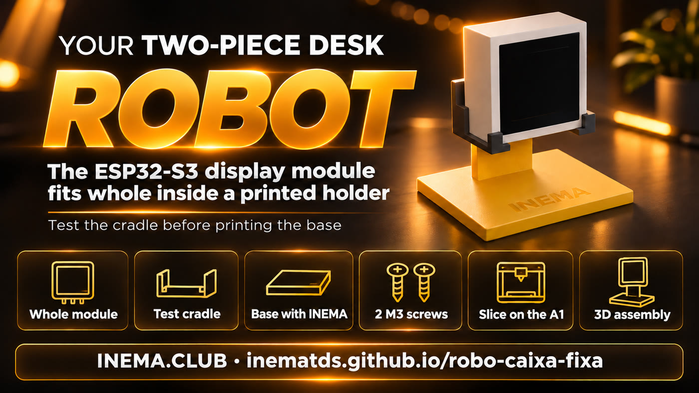
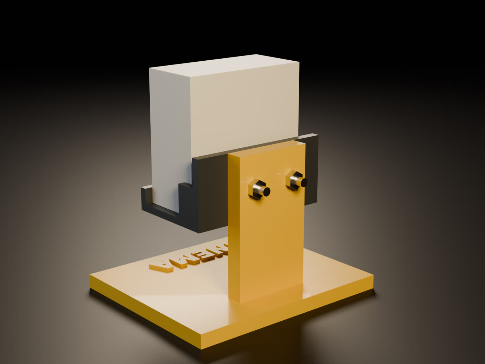
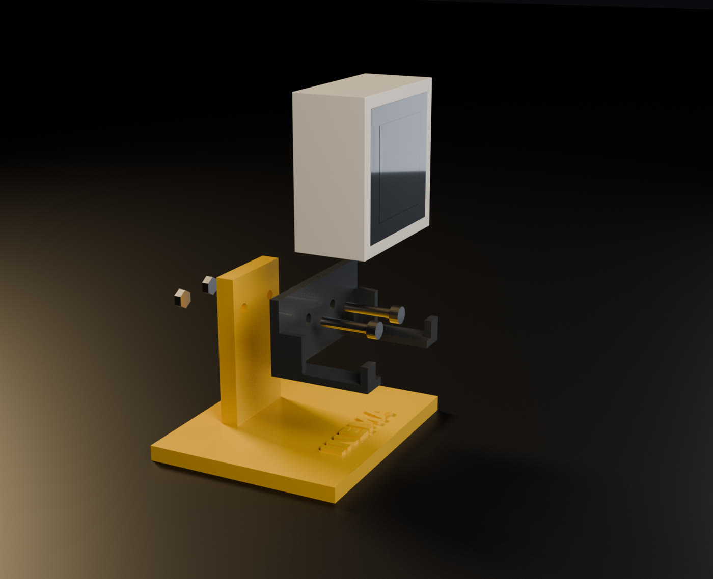
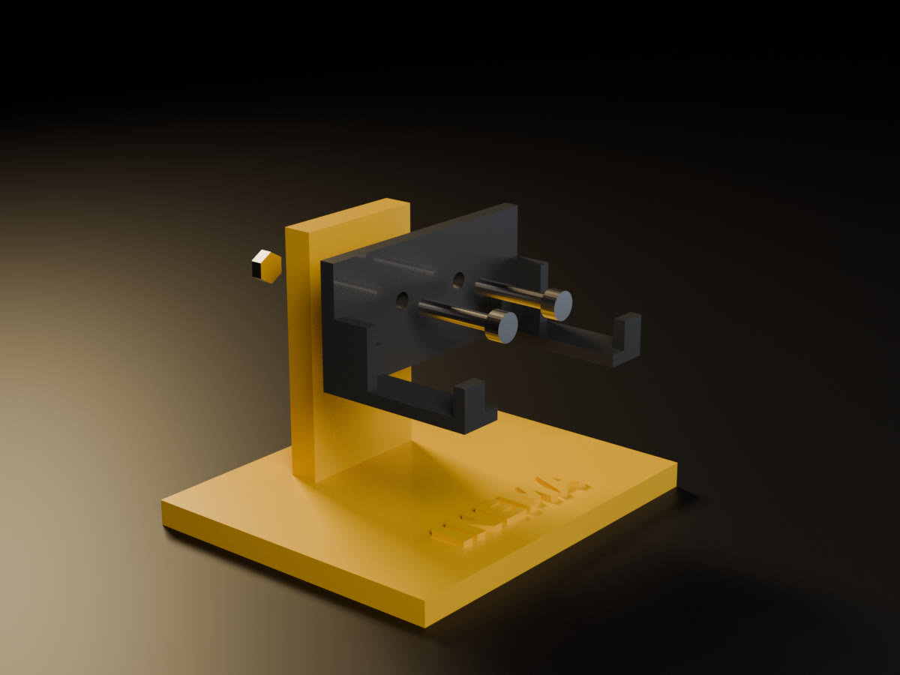
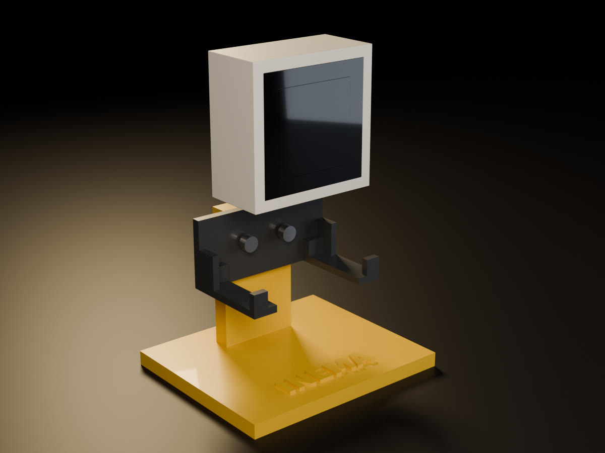

Your display module becomes the head of a desktop robot.
Printed robots often get complicated with motors, gears, and soldering. Robô caixa fixa has a fixed head: the module fits whole into a two-piece stand, and you can test the fit with a small part before using filament for the base. The study files are ready for printing the test cradle; the face on the display comes later, in software.
AI-generated illustration. The stand has not been printed yet; images of the actual model are below.
2printed parts
2 + 2M3 screws and nuts
0motors or solder joints
76 × 64mm base
78.4mm tall when assembled
38.3cm³ total part volume
In short
Anyone who wants a desktop robot often runs into the mechanical side: servos, gears, and wires. Robô caixa fixa is a 3D-printed stand that turns the Waveshare ESP32-S3 module with a 1.54-inch display into a fixed head on a base. The module stays whole, with its factory case and electronics. You need a 3D printer, Bambu Studio, filament, the module, and two screws with nuts. The design was checked on a computer, but has not been printed yet. The face on the display and the AI conversation do not exist yet: this guide covers the stand only.

AI-generated illustration: no parts have been printed yet. The exact shapes appear in the actual model images just below.
Video
Understand it in 2 minutes
Video in Portuguese. Prototype: the stand has not been printed yet, and the face and AI conversation do not exist yet.
The display, audio, and optional battery stay inside the original case. The stand simply holds the assembly: the front remains clear for touch, and the top buttons stay within reach.
Render of the actual CAD file. The base and cradle are the parts you print. The module is simplified (46 × 46 × 22.5 mm box), without each button and opening.
Base with column
76 × 64 mm plate with a column at the back; 54 mm tall overall. ARCKHÉ lettering raised on the front, the same colour as the base and part of the same piece.
Cradle
Small part (51.6 × 24 × 31.9 mm) that holds the module at the sides and underneath. Print this first to test the fit.
Factory module
Waveshare ESP32-S3 with a 1.54″ display. It slides in and out from above without disassembly or soldering.
Front view: the full display is visible, with no part of the stand over it.

Rear view: both M3 nuts sit on the back of the column.
How it fits together
Five parts, no glue
The exploded view separates the parts in the order you assemble them. The screws pass through the cradle and column; each screw head is hidden behind the module.

Exploded view of the actual model. Screws and nuts are shown in simplified form.
ESP32-S3 module with displayLower it from above until it rests in the cradle. Its own weight holds it in place.
Cradle (print first)Holds the sides and bottom of the module, with 0.4 mm of clearance on each side.
2 M3 × 16 screwsInsert them through the front of the cradle. The heads sit in a 4 mm gap behind the module.
Base with column and ARCKHÉThe column holds the cradle; the two holes line up with the cradle holes.
2 M3 nutsTighten the assembly from the back of the column.
3D model
Turn the robot in your hand
This is the project assembly file (the same GLB included in the download). Drag to rotate and use two fingers or the mouse wheel to zoom. File colours: yellow base, grey cradle, white module, blue display area.
Drag to rotate
If the model does not appear, download the GLB and open it in any 3D viewer (on Windows, 3D Viewer opens it).
Close-up of the raised lettering, rendered from the base file.
The brand
ARCKHÉ raised on the same piece
The letters are part of the base itself, 1.2 mm high and 36 mm wide. There is no colour change, glue, or extra part: one filament prints everything.
The outline is thickened by 0.2 mm on each side (a 0.4 mm thicker stroke) so the letters do not disappear in the print.
The text is kept away from the front edge: the letters start about 7.6 mm from it.
The mesh was checked to be closed and a single body after joining.
Dimensions
How much desk space it takes
Front and side views of the actual model, at the same scale. Dimensions come from the CAD file and the module's official drawing.
Front: base and module width, assembled height.Side: base depth and module thickness. The front is on the left.
Dimension
Value
Source
Complete module
46 × 46 × 22.5 mm
Official Waveshare drawing
Image area
28.12 × 28.12 mm (240 × 240 pixels)
Official drawing and module label
Side clearance
0.4 mm on each side
Design; not yet calibrated on the printer
Clearance behind the module
0.8 mm
Design
Gap for screw heads
4 mm
Design
Base
76 × 64 × 54 mm (with column)
STL file
Cradle
51.6 × 24 × 31.9 mm
STL file
The module
Which version to buy
The selected listing is the ESP32-S3 with 1.54″ display. The label on the back lists WAVESHARE, an ST7789 display with 240 × 240 pixels, 8 MB of PSRAM, and 16 MB of flash. It comes in four versions:
Model
Touch display
Battery
ESP32-S3-LCD-1.54-EN
No
No
ESP32-S3-LCD-1.54
No
Yes
ESP32-S3-Touch-LCD-1.54-EN
Yes
No
ESP32-S3-Touch-LCD-1.54
Yes
Yes
The official dimension drawing shows the touch version. Versions without touch or a battery may have cases of a different thickness, and there are no official dimensions for each one. Measure yours before printing the base. Do not confuse it with M5Stack CoreS3 Lite or SpotPear Muma: those are different boards with different dimensions.
“DeepSeek AI” in the listing does not prove that AI runs on the board. This project provides only the physical part. The face program and voice conversation are for a future stage.
Technical details
The kit: for printing and assembly
You do not need this section to understand what you have read so far. To print, follow this order: material, cradle, test, base, assembly.
What you need
Common items only, with no inserts, servos, or special parts.
1×
ESP32-S3 1.54″ module
Any of the four versions; measure the case.
2×
M3 × 16 screw
Head up to 3 mm high, such as a DIN 912 hex screw (the gap is 4 mm). Check the length on the workbench.
2×
M3 nut
Standard hex nut.
PETG
Filament
Initial recommendation, not yet tested. One colour only.
A1
3D printer
Instructions written for Bambu Lab A1, with a 0.4 mm nozzle.
free
Bambu Studio
Software that slices the STL for the printer.
1×
Tool for M3 screws
Match it to your screw head.
recommended
Calipers
To measure the case if the cradle feels tight.
To power the module later, use its USB cable and a standard USB power supply. The stand has no built-in power supply.
Download the cradle first
An STL file is a 3D model. It still needs to be sliced for your printer; it is not a ready-to-print instruction file.
How the STL files sit on the A1's 256 mm bed: the base rests on the bed and the cradle rests on its back. Do not rotate the parts.
The volume above is for solid parts; with 25% infill, filament use is lower, and Bambu Studio shows the actual amount when you slice. The ZIP does not include G-code or a validated 3MF profile; the instructions inside it are in Portuguese. View the verification report (JSON).
Slice in Bambu Studio
Slicing turns the model into layers and movements for the printer. You do this on your computer.
Setting
Starting point (not yet tested)
Where to find it
Printer
Bambu Lab A1, 0.4 mm nozzle
Top left
Filament
PETG from your brand or Generic PETG
Filament panel
Layer height
0.20 mm
Quality (Quality)
Walls
4
Strength → Wall loops
Infill
25%
Strength → Sparse infill density
Supports
On, Auto Normal
Support (Support)
Scale
100%, do not rotate the part
Virtual bed
1
Select your printer
Open Bambu Studio. Select Bambu Lab A1, a 0.4 mm nozzle, the installed build plate, and the actual filament. If you need to install it, use the official download.
2
Open the cradle only
Drag the cradle onto the virtual bed and keep it at 100%. It already rests on its back: do not rotate it to match how it looks when assembled. Expected size: 51.6 × 24 × 31.9 mm. A very different measurement suggests the scale or orientation is wrong.
3
Set the values in the table
Walls form the part's outline; infill is its inner structure. Supports are temporary structures that hold sections that would otherwise have no plastic underneath, and are removed afterward. If a field is hidden, turn on Advanced mode. If the printer has PETG loaded, do not select PLA in the software.
4
Click Slice Plate
The button may also appear as Slice Plate. In Preview, move through the layers: the first layer should sit entirely on the bed, nothing should start in mid-air, and supports should be in the required places. The software shows the actual time and filament use. If a mesh or orientation warning appears, stop and check before printing.
5
Send it to the A1
Using the microSD card: File → Export → Export plate sliced file (File → Export → Export plate sliced file). Copy the file ending in .gcode.3mf to the card, not the STL. On the A1, open the card's file list, choose the part, and check the build plate and filament before starting.
6
Test the cradle before the base
Let it cool and remove the supports. With the module turned off, fit it from above without pressing on the display. Check the buttons, USB connector, and sound openings. If it feels tight, stop: do not print the base. Measure the case width and thickness with calipers, then open a cradle adjustment request on GitHub with these measurements (the form already has the fields; you need a free GitHub account). Do not increase the scale: that changes the distance between the screw holes.
7
Only then print the base
Open the second STL, resting flat on the bed, and repeat the slicing steps. ARCKHÉ is already part of the piece: use one colour.
Assemble in four steps
Assemble the stand before adding the module. The images show the actual model; screws and nuts are simplified.
Test the cradleWith the printed cradle detached, fit the module from above. It should slide in without force.

Screw it to the columnPlace the cradle against the front of the column, pass both M3 × 16 screws through the front, and thread the nuts on from behind.

Lower the moduleOnce the stand is secure, lower the module from above until it rests on the bottom of the cradle.Check the backThe nuts are tight, the display is clear at the front, and the USB cable has no sharp bend. The actual plug position still needs to be checked.
The module is held in place by its own weight. There is no lock: if you lift the assembly by the head or turn the base over, the module will come out. Always carry it by the base.
What was checked on the computer
The CAD generator (cad/gerar.py) runs these tests each time it creates the parts. The numbers come from verificacao.json.
passed2 of 2
Closed meshes, one body each
The base and cradle have positive volume and no loose parts.
passed0.0 mm³
No part overlaps the module
Neither the base nor the cradle occupies the 46 × 46 × 22.5 mm box space, and they do not overlap each other.
passed5 heights
The module lifts out from above
When raised by 1, 5, 15, 30, and 60 mm, the module does not hit anything.
passed48.72 mm³
The test catches real errors
With a module 2 mm wider, the test detects the overlap. This shows that it does not approve everything.
passed16 × 14 mm
USB clearance
A clear space beneath the module, reserved for the plug. This is an estimate: the actual plug has not been measured.
pendingworkbench
What only a physical test can confirm
Verified slicing, printing, fit with your version, actual USB plug, sound, stability while touching the display, and strength.
Project status
Done
Mechanical study 01Two parts designed from the official dimensions, raised ARCKHÉ lettering, geometric tests, STL files, and 3D assembly published.
Now
Test the cradle on the workbenchPrint the cradle and check the fit with the purchased version, USB, buttons, and sound.
Next
Adjustments and final partsCorrect clearances, decide whether an anti-fall lock is needed, check stability, and release final STL files with material and print settings.
Future
Face and conversationProgram the face on the display. Voice conversation through a home computer or directly through an API is an option for later; no decision has been made yet.
Frequently asked questions
Do I need to solder or open the module?
No. The module fits whole, in its factory case. The only fasteners are the two M3 screws that join the cradle to the base.
Will it fit the M5Stack CoreS3 or another board?
No. The cradle was designed for the Waveshare module's 46 × 46 × 22.5 mm case. Other boards have different dimensions.
Can I print it in PLA?
PETG is the starting recommendation, and neither material has been tested yet. PLA should print the shape, but clearance and stiffness may differ. Test the small cradle first.
Can the robot talk yet?
Not yet. This project provides only the physical stand. The face on the display and voice conversation are the next step, in software.
The cradle is too tight. Should I increase the scale?
No. Increasing the scale also changes the position of the holes, so the part will no longer align with the base. Measure the case and open a cradle adjustment request with the measurements.
Can the base and cradle be different colours?
Yes, they are separate parts. The renders show a yellow base and graphite cradle. The ARCKHÉ lettering on the base is the same colour as the base itself.